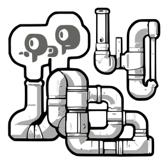
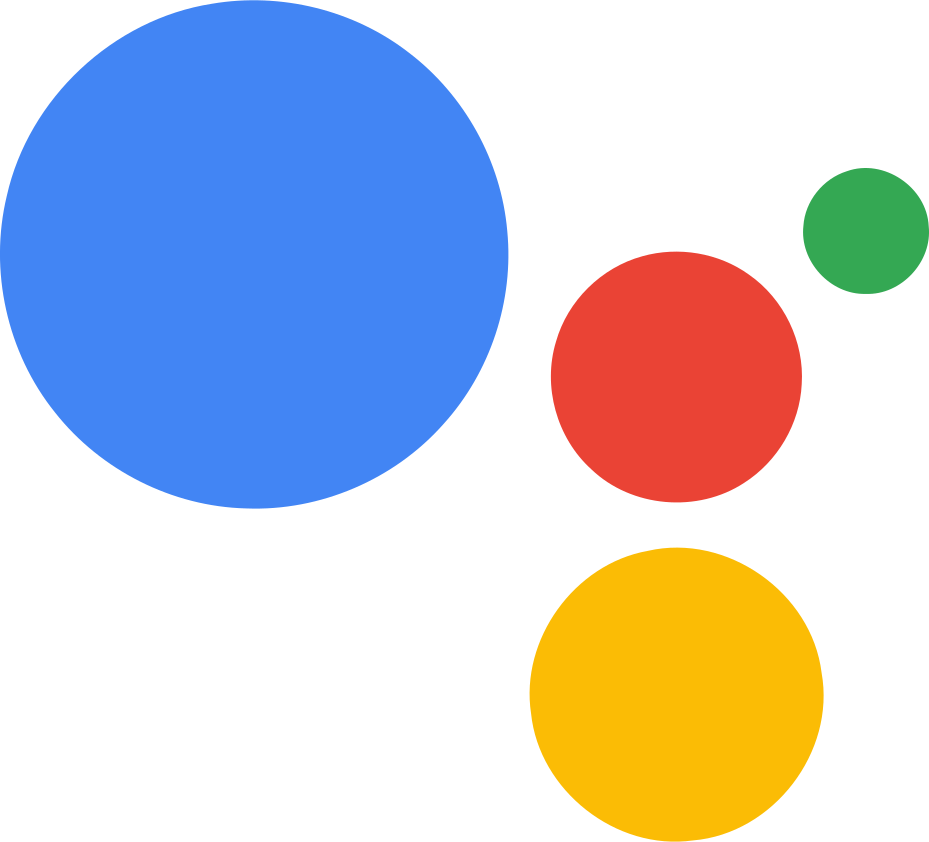
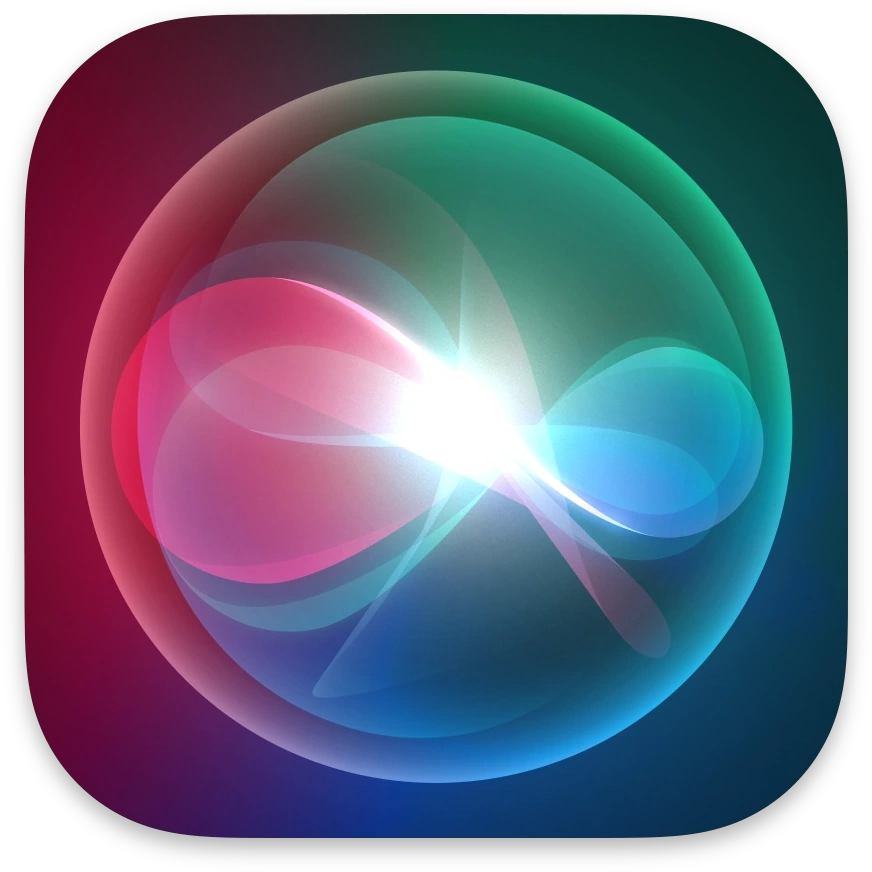
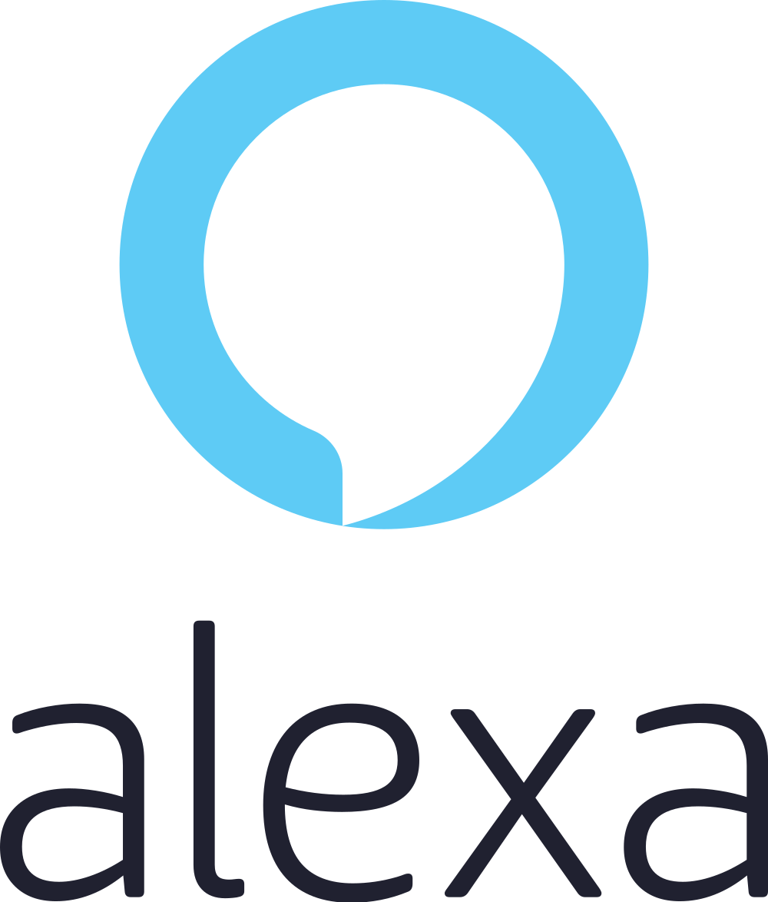
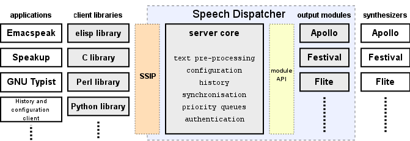
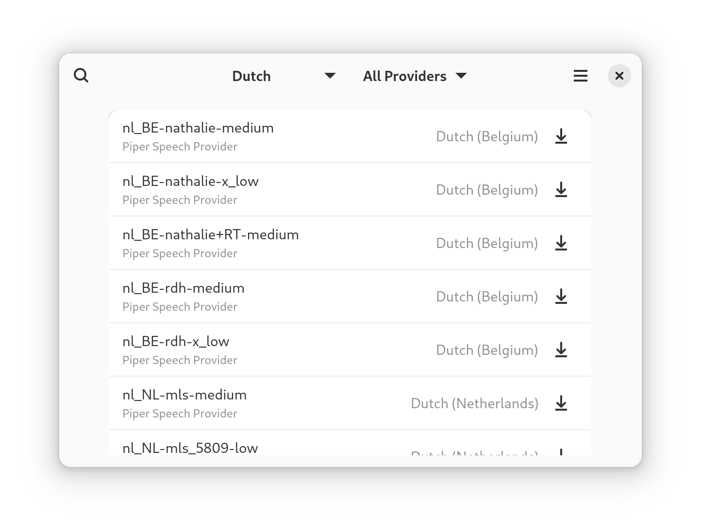

The Whole Spiel
A New Speech Platform
An Introduction and A Cry for Help
Speech Is Everywhere
- Screen Readers
- Virtual Assistants
- Automotive
- Navigation
- E-Book Narration
- Notifications
- Telephony



Web Speech API
for (let voice of speechSynthesis.getVoices()) {
let utterance =
new SpeechSynthesisUtterance(`Hello from ${voice.name}`);
utterance.voice = voice;
utterance.addEventListener('start',
evt => console.log(evt.target.text));
speechSynthesis.speak(utterance);
}
setTimeout(() => speechSynthesis.cancel(), 10000);
How It Started :)
How It's Going :(
|
Windows |
MacOS |
Android |
Linux |
| Boundary Events |
✅ |
✅ |
✅ |
❌ |
| Pause Resume |
✅ |
✅ |
❌ |
❌ |
| Volume Change |
✅ |
✅ |
❌ |
❌ |
| Concurrent Speech |
❌ |
✅ |
❌ |
❌ |
| Natural Voice |
✅ |
✅ |
✅ |
❌ |
Speech Dispatcher

- A standalone auto spawning daemon
- Uses its own socket protocol
- Manages a global queue of synthesis requests and schedules them according to priority flags
- Sends audio to device from the daemon process
- Offers extensibility in the form of output modules that need to be configured with text files
How did we end up with eSpeak?
- It has a simple permissive license
- It supports many, many languages and dialects
- It is tiny ~1mb??
- It is fully featured
- It is very fast and responsive
- Screen reader users generally like it
- …but
- Boundary events
- Pause / resume
- Volume change
- Concurrent speech
- Natural voice
Introducing Spiel
- A D-Bus interface
- A client library
- A voice distribution scheme
org.freedesktop.Speech.Provider
@dbus_interface("org.freedesktop.Speech.Provider")
class ExampleProvider(object):
@property
def Name(self) -> Str:
"""Return the human-readable name of the speech provider"""
return "Example"
@property
def Voices(self) -> List[Tuple[Str, Str, Str, UInt64, List[Str]]]:
"""Return a list of available voices, their audio output format,
features and supported languages"""
audio_format = "audio/x-raw,format=S16LE,channels=1,rate=22000"
features = SpeechProvider.VoiceFeature.NONE
return [
["Charlie", "gmw/en-US", audio_format, features, ["en-US"]],
["Dominique", "roa/fr", audio_format, features, ["fr-FR"]],
]
def Synthesize(
self,
fd: UnixFD,
utterance: Str,
voice_id: Str,
pitch: Double,
rate: Double,
is_ssml: Bool,
language: Str,
):
"""Synthesize speech write output to provided file descriptor"""
do_synthesis(fd, utterance, voice_id, pitch, rate, is_ssml, language)
Client searches for all *.Speech.Provider known names on the session bus

...and then collects all the voices they provide
Client calls synthesize() and profides a file descriptor
...the provider writes audio frames and event data to descriptor
libspiel
const speaker = await Spiel.Speaker.new(null);
speaker.connect('utterance-started',
(_, utt) => console.log(utt.get_text(), utt == utterance));
for (let voice of speaker.get_voices()) {
let utterance = new Spiel.Utterance(
{ voice, text: `Hello from ${voice.get_name()}` }
);
speaker.speak(utterance)
}
setTimeout(() => {
speaker.cancel();
}, 10000);
libspiel Features
- Inspired by Web Speech API, reusing its concepts.
- Each “Speaker” root class manages its own utterance queue.
- Speech is outputted via gstreamer, any gstreamer sink can be swapped out.
- The list of voices is a live ListModel that is updated as providers come and go and new voices are
installed.
- Auto-selects voice according to specified utterance language
- Maybe one day: language auto-detection.
- Voice selection is configurable via gsettings
libspiel Ports
- Andy Holmes ported Orca to libspiel
- I have a WIP port for Firefox
- Foliate?
- Calibre?
- Boundary events
- Pause / resume
- Volume change
- Concurrent speech
- Natural voice
3. A Voice Distribution Scheme
Neural Network Voices are a game changer
There is no perfect engine or voice
- The license isn’t permissive enough
- The voice’s license is not permissive
- The language support is limited
- The voice data is large (+60mb)
- The dependencies are eclectic
- AI voices are game changer
Bundle It All In a Flatpak?
- Piper's voice data is 8gb
- There are 102 eSpeak voices
- Can't anticipate the user's desired language
Let's use Flatpak extensions for voice data
Further Flatpak/Appstream Gaps
- When installing a voice flatpak extension:
- Extensions can’t pull in dependencies.
- When a voice extension is installed the provider service needs to be restarted
- Flatpakref files don’t work with extensions
- AppStream could use some voice-specific elements, like voice sample.
- Uninstalling an engine does not kill the D-Bus service

- Boundary events
- Pause / resume
- Volume change
- Concurrent speech
- Natural voice
Something to think about...
org.freedesktop.Speech.Recognizer
Write a Provider
- Svox
- Festival
- Voxin
- Mimic3
- RHVoice
- Windows voices via Wine
- Android voices?
- Cloud voices
- The latest and greatest neural network TTS
Port and App, or Make Yours Talk
- WebKitGTK?
- Foliate?
- Calibre?
Discovery and Distribution
- Enhance Flatpak
- Expand Flathub (maybe a voices micro-site?)
- Implement spoken content in GNOME Settings
Write a Portal
Currently, client apps need full session D-Bus access
Make This a Grown-up Project
- Website
- Documentation
- Test coverage
- Continuous integration
- Release management
- Pretty graphics
Acknowledgements
- Mozilla
- STF (Sonny)
- Andy Holmes
- Contributors large and small